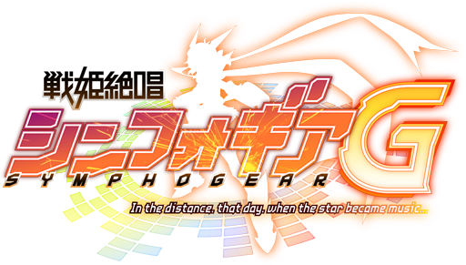
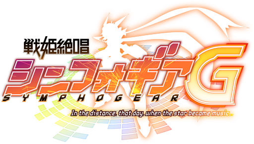
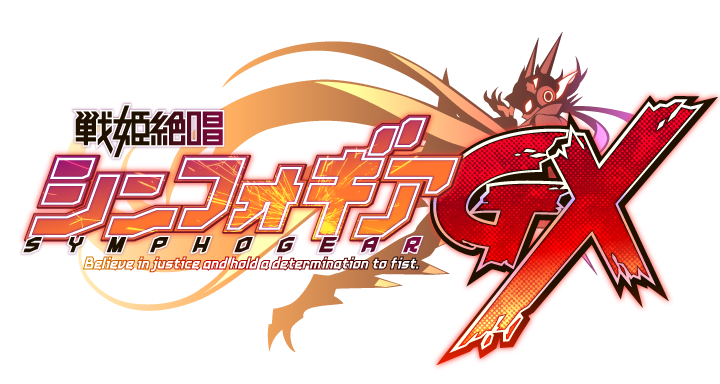
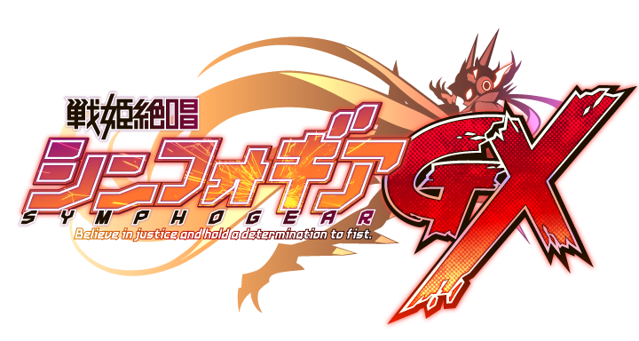

 

『戦姫絶唱シンフォギア』（せんきぜっしょうシンフォギア）は、日本のテレビアニメ。音楽プロデューサーである上松範康が初めてテレビアニメの原作を手掛ける。2012年より長期にわたってシリーズが制作・放送されている。
女子中学生の立花響は、天羽奏と風鳴翼による人気ボーカルユニット「ツヴァイウィング」のライブを楽しんでいた。だがその最中、人を飲み込み炭素に変えてしまう認定特異災害「ノイズ」が発生し、観客たちを次々と襲い始める。大混乱の会場で響が見たものは、歌を口ずさみながらプロテクターに身を包み、ノイズと戦うツヴァイウィングの2人の姿だった。まもなく逃げ遅れて重傷を負った響を救うため、奏は自らの命と引き換えに絶唱を歌い、ノイズを殲滅させる。 それから2年後、響は親友の小日向未来と共に憧れの翼のいる私立リディアン音楽院の高等科へ進学するが、街中で再びノイズと出くわしてしまう。追い詰められた響は、2年前に奏が歌っていたあの歌を口ずさむ。すると、眩い光と共に響の身体を特殊なプロテクターが包み込む。それは、ノイズに対抗する唯一の力にして奏の置き土産「シンフォギアシステム」だった。響は自身の変化に戸惑うままノイズから逃げ惑うが、そこへ現れた翼によって救出され、なし崩しに特異災害対策機動部二課へ連行される。そこで自分を取り巻く事情を知った響は、奏に代わって自らに宿ったシンフォギア「ガングニール」の装者として戦う道を選ぶ。